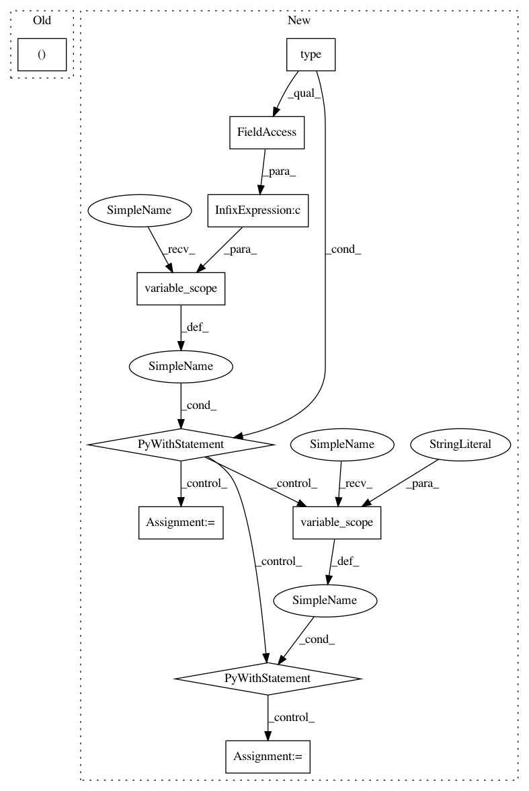

4acd61442955baa2509fdc2961284c9d2a986f34,tflearn/layers/recurrent.py,BasicRNNCell,__call__,#BasicRNNCell#Any#Any#Any#,577
Before Change
def __call__(self, inputs, state, scope):
Most basic RNN: output = new_state = tanh(W * input + U * state + B).
self.W, self.b, concat = _linear([inputs, state], self._num_units,
self.bias, self.W, self.b,
self.W_init, trainable=self.trainable,
restore=self.restore, scope=scope)
After Change
def __call__(self, inputs, state, scope=None):
Most basic RNN: output = new_state = activation(W * input + U * state + B).
with tf.variable_scope(scope or type(self).__name__):
// "BasicRNNCell"
output = self._activation(
_linear([inputs, state], self._num_units, True, 0.,
self.weights_init, self.trainable, self.restore,
self.reuse))
// Retrieve RNN Variables
with tf.variable_scope("Linear", reuse=True):
self.W = tf.get_variable("Matrix")
self.b = tf.get_variable("Bias")
return output, output
class BasicLSTMCell(_rnn_cell.RNNCell):
In pattern: SUPERPATTERN
Frequency: 3
Non-data size: 10
Instances
Project Name: tflearn/tflearn
Commit Name: 4acd61442955baa2509fdc2961284c9d2a986f34
Time: 2016-07-01
Author: aymeric.damien@gmail.com
File Name: tflearn/layers/recurrent.py
Class Name: BasicRNNCell
Method Name: __call__
Project Name: tflearn/tflearn
Commit Name: 4acd61442955baa2509fdc2961284c9d2a986f34
Time: 2016-07-01
Author: aymeric.damien@gmail.com
File Name: tflearn/layers/recurrent.py
Class Name: GRUCell
Method Name: __call__
Project Name: tflearn/tflearn
Commit Name: 4acd61442955baa2509fdc2961284c9d2a986f34
Time: 2016-07-01
Author: aymeric.damien@gmail.com
File Name: tflearn/layers/recurrent.py
Class Name: BasicLSTMCell
Method Name: __call__
Project Name: tflearn/tflearn
Commit Name: 4acd61442955baa2509fdc2961284c9d2a986f34
Time: 2016-07-01
Author: aymeric.damien@gmail.com
File Name: tflearn/layers/recurrent.py
Class Name: BasicRNNCell
Method Name: __call__